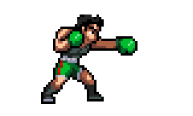

I practiced boxing for two years, a discipline that taught me a great deal, both physically and mentally. Even though I no longer train as regularly today, my father — who has a great passion for this sport — still trains me from time to time, which allows me to keep the pace and progress at my own rhythm. As a Kazakh, boxing holds a special place in my heart. It is a very popular sport in Kazakhstan, with many world-renowned champions such as Gennady Golovkin, who have put our country on the international stage. This sporting culture is part of my identity and inspires me every day in everything I do.